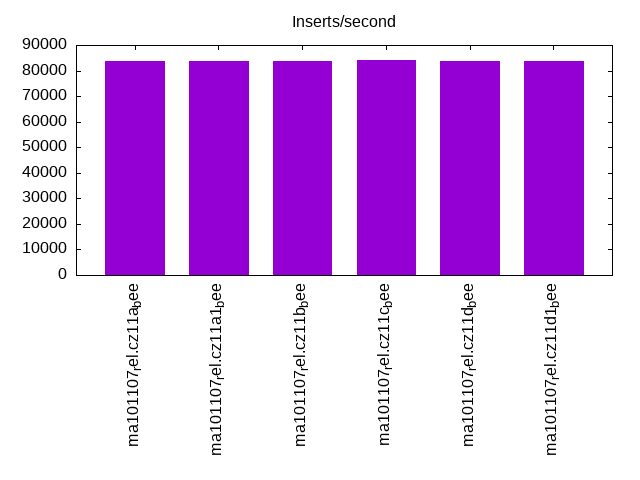
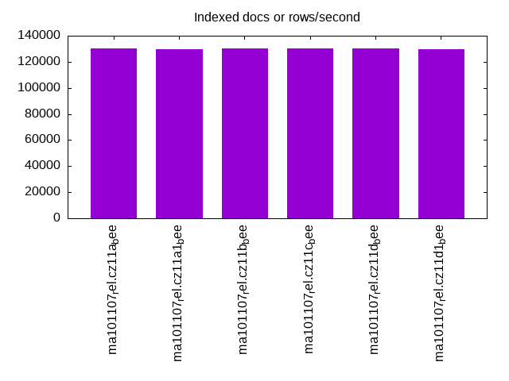
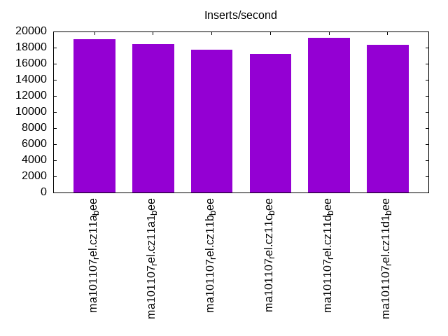
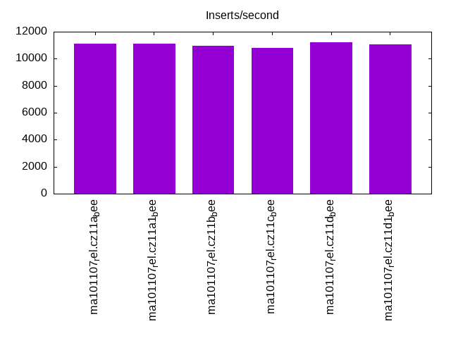
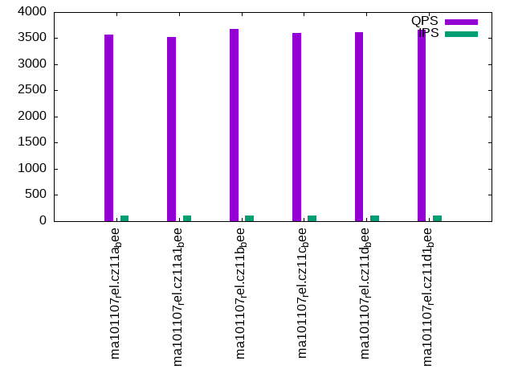
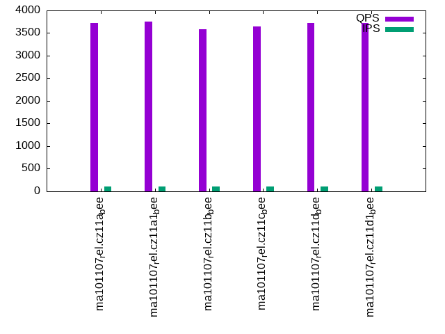
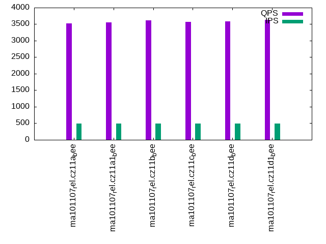
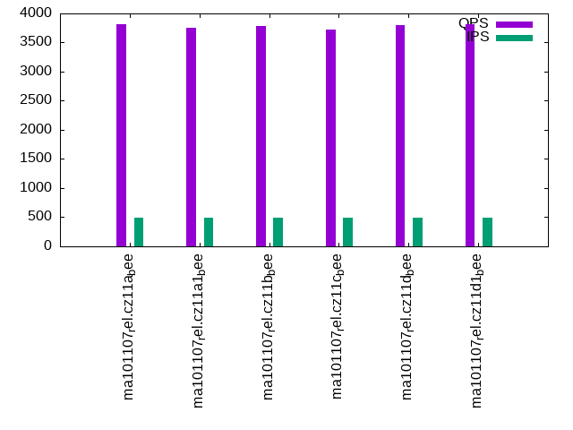
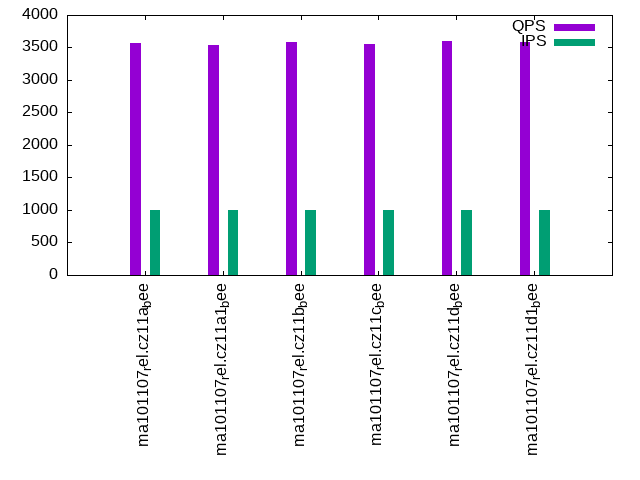
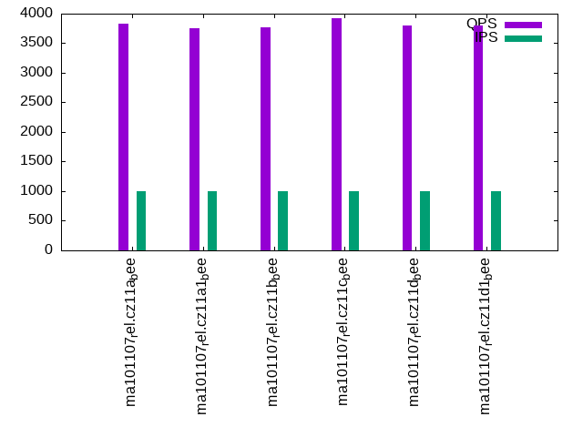

This is a report for the insert benchmark with 30M docs and 1 client(s). It is generated by scripts (bash, awk, sed) and Tufte might not be impressed. An overview of the insert benchmark is here and a short update is here. Below, by DBMS, I mean DBMS+version.config. An example is my8020.c10b40 where my means MySQL, 8020 is version 8.0.20 and c10b40 is the name for the configuration file.
The test server has 8 AMD cores, 16G RAM and an NVMe SSD. It is described here as the Beelink. The benchmark was run with 1 client and there were 1 or 3 connections per client (1 for queries or inserts without rate limits, 1+1 for rate limited inserts+deletes). It uses 1 table. It loads 30M rows per table without secondary indexes, creates 3 secondary indexes per table, then inserts 40m+10m rows per table with a delete per insert to avoid growing the table. It then does 6 read+write tests for 1800s each that do queries as fast as possible with 100,100,500,500,1000,1000 inserts/s and the same for deletes/s per client concurrent with the queries. The database is cached in memory. Clients and the DBMS share one server. The per-database configs are in the per-database subdirectories here.
The tested DBMS are:
The numbers are inserts/s for l.i0, l.i1 and l.i2, indexed docs (or rows) /s for l.x and queries/s for qr100, qp100 thru qr1000, qp1000" The values are the average rate over the entire test for inserts (IPS) and queries (QPS). The range of values for IPS and QPS is split into 3 parts: bottom 25%, middle 50%, top 25%. Values in the bottom 25% have a red background, values in the top 25% have a green background and values in the middle have no color. A gray background is used for values that can be ignored because the DBMS did not sustain the target insert rate. Red backgrounds are not used when the minimum value is within 80% of the max value.
| dbms | l.i0 | l.x | l.i1 | l.i2 | qr100 | qp100 | qr500 | qp500 | qr1000 | qp1000 |
|---|---|---|---|---|---|---|---|---|---|---|
| ma101107_rel.cz11a_bee | 83799 | 130435 | 19066 | 11136 | 3565 | 3729 | 3516 | 3818 | 3574 | 3824 |
| ma101107_rel.cz11a1_bee | 83565 | 129870 | 18459 | 11111 | 3529 | 3752 | 3550 | 3751 | 3536 | 3756 |
| ma101107_rel.cz11b_bee | 83565 | 130435 | 17730 | 10941 | 3670 | 3588 | 3621 | 3791 | 3578 | 3768 |
| ma101107_rel.cz11c_bee | 84270 | 130435 | 17219 | 10799 | 3599 | 3644 | 3568 | 3724 | 3554 | 3919 |
| ma101107_rel.cz11d_bee | 83799 | 130435 | 19175 | 11198 | 3614 | 3720 | 3580 | 3802 | 3597 | 3807 |
| ma101107_rel.cz11d1_bee | 83565 | 129870 | 18391 | 11074 | 3663 | 3728 | 3628 | 3817 | 3589 | 3805 |
This table has relative throughput, throughput for the DBMS relative to the DBMS in the first line, using the absolute throughput from the previous table. Values less than 0.95 have a yellow background. Values greater than 1.05 have a blue background.
| dbms | l.i0 | l.x | l.i1 | l.i2 | qr100 | qp100 | qr500 | qp500 | qr1000 | qp1000 |
|---|---|---|---|---|---|---|---|---|---|---|
| ma101107_rel.cz11a_bee | 1.00 | 1.00 | 1.00 | 1.00 | 1.00 | 1.00 | 1.00 | 1.00 | 1.00 | 1.00 |
| ma101107_rel.cz11a1_bee | 1.00 | 1.00 | 0.97 | 1.00 | 0.99 | 1.01 | 1.01 | 0.98 | 0.99 | 0.98 |
| ma101107_rel.cz11b_bee | 1.00 | 1.00 | 0.93 | 0.98 | 1.03 | 0.96 | 1.03 | 0.99 | 1.00 | 0.99 |
| ma101107_rel.cz11c_bee | 1.01 | 1.00 | 0.90 | 0.97 | 1.01 | 0.98 | 1.01 | 0.98 | 0.99 | 1.02 |
| ma101107_rel.cz11d_bee | 1.00 | 1.00 | 1.01 | 1.01 | 1.01 | 1.00 | 1.02 | 1.00 | 1.01 | 1.00 |
| ma101107_rel.cz11d1_bee | 1.00 | 1.00 | 0.96 | 0.99 | 1.03 | 1.00 | 1.03 | 1.00 | 1.00 | 1.00 |
This lists the average rate of inserts/s for the tests that do inserts concurrent with queries. For such tests the query rate is listed in the table above. The read+write tests are setup so that the insert rate should match the target rate every second. Cells that are not at least 95% of the target have a red background to indicate a failure to satisfy the target.
| dbms | qr100.L1 | qp100.L2 | qr500.L3 | qp500.L4 | qr1000.L5 | qp1000.L6 |
|---|---|---|---|---|---|---|
| ma101107_rel.cz11a_bee | 100 | 100 | 499 | 499 | 998 | 998 |
| ma101107_rel.cz11a1_bee | 100 | 100 | 499 | 499 | 998 | 998 |
| ma101107_rel.cz11b_bee | 100 | 100 | 499 | 499 | 998 | 998 |
| ma101107_rel.cz11c_bee | 100 | 100 | 499 | 499 | 998 | 998 |
| ma101107_rel.cz11d_bee | 100 | 100 | 499 | 499 | 998 | 998 |
| ma101107_rel.cz11d1_bee | 100 | 100 | 499 | 499 | 998 | 998 |
| target | 100 | 100 | 500 | 500 | 1000 | 1000 |
l.i0: load without secondary indexes. Graphs for performance per 1-second interval are here.
Average throughput:
Insert response time histogram: each cell has the percentage of responses that take <= the time in the header and max is the max response time in seconds. For the max column values in the top 25% of the range have a red background and in the bottom 25% of the range have a green background. The red background is not used when the min value is within 80% of the max value.
| dbms | 256us | 1ms | 4ms | 16ms | 64ms | 256ms | 1s | 4s | 16s | gt | max |
|---|---|---|---|---|---|---|---|---|---|---|---|
| ma101107_rel.cz11a_bee | 10.964 | 88.724 | 0.197 | 0.111 | 0.005 | 0.182 | |||||
| ma101107_rel.cz11a1_bee | 10.692 | 88.976 | 0.206 | 0.118 | 0.007 | 0.199 | |||||
| ma101107_rel.cz11b_bee | 9.943 | 89.744 | 0.197 | 0.111 | 0.005 | 0.229 | |||||
| ma101107_rel.cz11c_bee | 12.063 | 87.625 | 0.185 | 0.121 | 0.005 | 0.251 | |||||
| ma101107_rel.cz11d_bee | 10.120 | 89.568 | 0.184 | 0.122 | 0.005 | 0.190 | |||||
| ma101107_rel.cz11d1_bee | 11.378 | 88.292 | 0.201 | 0.121 | 0.007 | 0.202 |
Performance metrics for the DBMS listed above. Some are normalized by throughput, others are not. Legend for results is here.
ips qps rps rmbps wps wmbps rpq rkbpq wpi wkbpi csps cpups cspq cpupq dbgb1 dbgb2 rss maxop p50 p99 tag 83799 0 0 0.0 266.2 21.6 0.000 0.000 0.003 0.264 11299 25.8 0.135 25 2.0 17.8 2.4 0.182 84803 71353 ma101107_rel.cz11a_bee 83565 0 0 0.0 374.7 23.3 0.000 0.000 0.004 0.286 11804 25.7 0.141 25 2.0 6.8 2.3 0.199 84651 69921 ma101107_rel.cz11a1_bee 83565 0 0 0.0 262.2 21.5 0.000 0.000 0.003 0.264 11334 25.9 0.136 25 2.0 17.8 2.4 0.229 84504 70719 ma101107_rel.cz11b_bee 84270 0 0 0.0 54.6 21.5 0.000 0.000 0.001 0.262 11219 26.0 0.133 25 2.0 17.8 2.4 0.251 84902 70520 ma101107_rel.cz11c_bee 83799 0 0 0.0 265.5 21.6 0.000 0.000 0.003 0.263 11312 25.8 0.135 25 2.0 17.8 2.4 0.190 84506 70520 ma101107_rel.cz11d_bee 83565 0 0 0.0 379.3 23.4 0.000 0.000 0.005 0.287 11733 25.7 0.140 25 2.0 6.8 2.3 0.202 84506 70521 ma101107_rel.cz11d1_bee
l.x: create secondary indexes.
Average throughput:
Performance metrics for the DBMS listed above. Some are normalized by throughput, others are not. Legend for results is here.
ips qps rps rmbps wps wmbps rpq rkbpq wpi wkbpi csps cpups cspq cpupq dbgb1 dbgb2 rss maxop p50 p99 tag 130435 0 0 0.0 823.0 111.7 0.000 0.000 0.006 0.877 3016 12.1 0.023 7 4.5 20.3 3.8 0.002 NA NA ma101107_rel.cz11a_bee 129870 0 0 0.0 768.9 109.9 0.000 0.000 0.006 0.866 2564 12.0 0.020 7 4.5 9.3 3.8 0.002 NA NA ma101107_rel.cz11a1_bee 130435 0 0 0.0 817.1 111.0 0.000 0.000 0.006 0.872 3151 12.1 0.024 7 4.5 20.3 3.8 0.002 NA NA ma101107_rel.cz11b_bee 130435 0 0 0.0 272.3 111.0 0.000 0.000 0.002 0.872 3240 12.2 0.025 7 4.5 20.3 3.8 0.002 NA NA ma101107_rel.cz11c_bee 130435 0 0 0.0 814.4 110.7 0.000 0.000 0.006 0.869 3054 12.1 0.023 7 4.5 20.3 3.8 0.002 NA NA ma101107_rel.cz11d_bee 129870 0 0 0.0 782.2 110.2 0.000 0.000 0.006 0.869 2584 12.0 0.020 7 4.5 9.3 3.8 0.002 NA NA ma101107_rel.cz11d1_bee
l.i1: continue load after secondary indexes created with 50 inserts per transaction. Graphs for performance per 1-second interval are here.
Average throughput:
Insert response time histogram: each cell has the percentage of responses that take <= the time in the header and max is the max response time in seconds. For the max column values in the top 25% of the range have a red background and in the bottom 25% of the range have a green background. The red background is not used when the min value is within 80% of the max value.
| dbms | 256us | 1ms | 4ms | 16ms | 64ms | 256ms | 1s | 4s | 16s | gt | max |
|---|---|---|---|---|---|---|---|---|---|---|---|
| ma101107_rel.cz11a_bee | 95.914 | 4.010 | 0.075 | nonzero | nonzero | 0.263 | |||||
| ma101107_rel.cz11a1_bee | 93.481 | 6.398 | 0.120 | 0.001 | 0.139 | ||||||
| ma101107_rel.cz11b_bee | 94.287 | 5.220 | 0.489 | 0.004 | 0.235 | ||||||
| ma101107_rel.cz11c_bee | 94.149 | 5.084 | 0.751 | 0.015 | nonzero | 0.314 | |||||
| ma101107_rel.cz11d_bee | 95.916 | 4.012 | 0.071 | nonzero | 0.117 | ||||||
| ma101107_rel.cz11d1_bee | 93.264 | 6.610 | 0.125 | 0.001 | 0.136 |
Delete response time histogram: each cell has the percentage of responses that take <= the time in the header and max is the max response time in seconds. For the max column values in the top 25% of the range have a red background and in the bottom 25% of the range have a green background. The red background is not used when the min value is within 80% of the max value.
| dbms | 256us | 1ms | 4ms | 16ms | 64ms | 256ms | 1s | 4s | 16s | gt | max |
|---|---|---|---|---|---|---|---|---|---|---|---|
| ma101107_rel.cz11a_bee | 97.312 | 2.649 | 0.039 | nonzero | 0.255 | ||||||
| ma101107_rel.cz11a1_bee | 95.029 | 4.887 | 0.083 | 0.001 | 0.104 | ||||||
| ma101107_rel.cz11b_bee | 96.131 | 3.470 | 0.396 | 0.003 | 0.234 | ||||||
| ma101107_rel.cz11c_bee | 95.916 | 3.458 | 0.613 | 0.013 | nonzero | 0.269 | |||||
| ma101107_rel.cz11d_bee | 97.301 | 2.656 | 0.043 | 0.063 | |||||||
| ma101107_rel.cz11d1_bee | 94.917 | 4.995 | 0.088 | 0.001 | 0.111 |
Performance metrics for the DBMS listed above. Some are normalized by throughput, others are not. Legend for results is here.
ips qps rps rmbps wps wmbps rpq rkbpq wpi wkbpi csps cpups cspq cpupq dbgb1 dbgb2 rss maxop p50 p99 tag 19066 0 754 2.9 2800.7 102.6 0.040 0.158 0.147 5.511 50067 34.8 2.626 146 6.2 22.0 6.1 0.263 20328 5294 ma101107_rel.cz11a_bee 18459 0 76 0.3 7907.1 251.6 0.004 0.016 0.428 13.955 73400 35.5 3.976 154 6.2 11.0 6.0 0.139 19279 5394 ma101107_rel.cz11a1_bee 17730 0 698 2.7 2643.1 95.4 0.039 0.158 0.149 5.509 46805 32.9 2.640 148 6.2 22.0 6.1 0.235 18430 5294 ma101107_rel.cz11b_bee 17219 0 677 2.6 2422.3 92.4 0.039 0.157 0.141 5.496 42314 32.5 2.457 151 6.1 22.0 6.1 0.314 17281 4897 ma101107_rel.cz11c_bee 19175 0 756 3.0 2809.4 103.0 0.039 0.158 0.147 5.502 50335 34.9 2.625 146 6.2 22.0 6.1 0.117 20427 5294 ma101107_rel.cz11d_bee 18391 0 75 0.3 7898.0 251.3 0.004 0.016 0.429 13.992 73461 35.5 3.994 154 6.2 11.0 6.0 0.136 19229 5244 ma101107_rel.cz11d1_bee
l.i2: continue load after secondary indexes created with 5 inserts per transaction. Graphs for performance per 1-second interval are here.
Average throughput:
Insert response time histogram: each cell has the percentage of responses that take <= the time in the header and max is the max response time in seconds. For the max column values in the top 25% of the range have a red background and in the bottom 25% of the range have a green background. The red background is not used when the min value is within 80% of the max value.
| dbms | 256us | 1ms | 4ms | 16ms | 64ms | 256ms | 1s | 4s | 16s | gt | max |
|---|---|---|---|---|---|---|---|---|---|---|---|
| ma101107_rel.cz11a_bee | 0.384 | 99.465 | 0.131 | 0.021 | nonzero | nonzero | 0.065 | ||||
| ma101107_rel.cz11a1_bee | 0.663 | 98.875 | 0.378 | 0.082 | 0.002 | nonzero | 0.072 | ||||
| ma101107_rel.cz11b_bee | 0.518 | 99.260 | 0.117 | 0.102 | 0.002 | 0.063 | |||||
| ma101107_rel.cz11c_bee | 0.344 | 99.411 | 0.113 | 0.122 | 0.009 | nonzero | 0.106 | ||||
| ma101107_rel.cz11d_bee | 0.428 | 99.415 | 0.135 | 0.021 | 0.001 | 0.063 | |||||
| ma101107_rel.cz11d1_bee | 0.606 | 98.930 | 0.379 | 0.083 | 0.002 | nonzero | 0.073 |
Delete response time histogram: each cell has the percentage of responses that take <= the time in the header and max is the max response time in seconds. For the max column values in the top 25% of the range have a red background and in the bottom 25% of the range have a green background. The red background is not used when the min value is within 80% of the max value.
| dbms | 256us | 1ms | 4ms | 16ms | 64ms | 256ms | 1s | 4s | 16s | gt | max |
|---|---|---|---|---|---|---|---|---|---|---|---|
| ma101107_rel.cz11a_bee | 3.060 | 96.786 | 0.134 | 0.020 | nonzero | nonzero | 0.065 | ||||
| ma101107_rel.cz11a1_bee | 3.300 | 96.257 | 0.365 | 0.076 | 0.002 | nonzero | 0.072 | ||||
| ma101107_rel.cz11b_bee | 2.748 | 97.043 | 0.113 | 0.094 | 0.002 | 0.063 | |||||
| ma101107_rel.cz11c_bee | 3.082 | 96.685 | 0.112 | 0.113 | 0.008 | nonzero | 0.106 | ||||
| ma101107_rel.cz11d_bee | 2.951 | 96.891 | 0.137 | 0.021 | 0.001 | 0.063 | |||||
| ma101107_rel.cz11d1_bee | 2.887 | 96.673 | 0.364 | 0.074 | 0.002 | nonzero | 0.072 |
Performance metrics for the DBMS listed above. Some are normalized by throughput, others are not. Legend for results is here.
ips qps rps rmbps wps wmbps rpq rkbpq wpi wkbpi csps cpups cspq cpupq dbgb1 dbgb2 rss maxop p50 p99 tag 11136 0 1774 6.9 1327.5 50.6 0.159 0.637 0.119 4.652 62221 35.3 5.587 254 6.2 22.0 6.1 0.065 11163 9794 ma101107_rel.cz11a_bee 11111 0 0 0.0 4378.0 140.4 0.000 0.000 0.394 12.939 72944 36.5 6.565 263 6.2 11.0 6.0 0.072 11148 9699 ma101107_rel.cz11a1_bee 10941 0 1744 6.8 1335.0 50.0 0.159 0.638 0.122 4.677 61253 35.0 5.599 256 6.2 22.0 6.1 0.063 11043 9394 ma101107_rel.cz11b_bee 10799 0 1722 6.7 1264.2 49.2 0.159 0.638 0.117 4.668 58906 34.7 5.455 257 6.1 22.0 6.1 0.106 11038 8365 ma101107_rel.cz11c_bee 11198 0 1786 7.0 1355.9 51.5 0.159 0.638 0.121 4.712 62617 35.4 5.592 253 6.2 22.0 6.1 0.063 11223 10149 ma101107_rel.cz11d_bee 11074 0 0 0.0 4360.7 139.8 0.000 0.000 0.394 12.931 72775 36.5 6.572 264 6.2 11.0 6.0 0.073 11133 9594 ma101107_rel.cz11d1_bee
qr100.L1: range queries with 100 insert/s per client. Graphs for performance per 1-second interval are here.
Average throughput:
Query response time histogram: each cell has the percentage of responses that take <= the time in the header and max is the max response time in seconds. For max values in the top 25% of the range have a red background and in the bottom 25% of the range have a green background. The red background is not used when the min value is within 80% of the max value.
| dbms | 256us | 1ms | 4ms | 16ms | 64ms | 256ms | 1s | 4s | 16s | gt | max |
|---|---|---|---|---|---|---|---|---|---|---|---|
| ma101107_rel.cz11a_bee | 54.960 | 45.040 | nonzero | nonzero | 0.005 | ||||||
| ma101107_rel.cz11a1_bee | 52.340 | 47.660 | nonzero | nonzero | 0.014 | ||||||
| ma101107_rel.cz11b_bee | 59.643 | 40.356 | 0.001 | nonzero | 0.012 | ||||||
| ma101107_rel.cz11c_bee | 56.064 | 43.935 | nonzero | nonzero | nonzero | 0.016 | |||||
| ma101107_rel.cz11d_bee | 57.715 | 42.284 | nonzero | 0.004 | |||||||
| ma101107_rel.cz11d1_bee | 59.825 | 40.174 | 0.001 | nonzero | 0.013 |
Insert response time histogram: each cell has the percentage of responses that take <= the time in the header and max is the max response time in seconds. For max values in the top 25% of the range have a red background and in the bottom 25% of the range have a green background. The red background is not used when the min value is within 80% of the max value.
| dbms | 256us | 1ms | 4ms | 16ms | 64ms | 256ms | 1s | 4s | 16s | gt | max |
|---|---|---|---|---|---|---|---|---|---|---|---|
| ma101107_rel.cz11a_bee | 53.306 | 46.667 | 0.028 | 0.024 | |||||||
| ma101107_rel.cz11a1_bee | 99.944 | 0.028 | 0.028 | 0.021 | |||||||
| ma101107_rel.cz11b_bee | 53.194 | 46.778 | 0.028 | 0.044 | |||||||
| ma101107_rel.cz11c_bee | 53.028 | 46.972 | 0.012 | ||||||||
| ma101107_rel.cz11d_bee | 53.278 | 46.694 | 0.028 | 0.026 | |||||||
| ma101107_rel.cz11d1_bee | 99.917 | 0.083 | 0.015 |
Delete response time histogram: each cell has the percentage of responses that take <= the time in the header and max is the max response time in seconds. For max values in the top 25% of the range have a red background and in the bottom 25% of the range have a green background. The red background is not used when the min value is within 80% of the max value.
| dbms | 256us | 1ms | 4ms | 16ms | 64ms | 256ms | 1s | 4s | 16s | gt | max |
|---|---|---|---|---|---|---|---|---|---|---|---|
| ma101107_rel.cz11a_bee | 53.361 | 46.639 | 0.012 | ||||||||
| ma101107_rel.cz11a1_bee | 99.944 | 0.056 | 0.014 | ||||||||
| ma101107_rel.cz11b_bee | 53.222 | 46.750 | 0.028 | 0.017 | |||||||
| ma101107_rel.cz11c_bee | 53.028 | 46.972 | 0.012 | ||||||||
| ma101107_rel.cz11d_bee | 53.278 | 46.722 | 0.012 | ||||||||
| ma101107_rel.cz11d1_bee | 99.972 | 0.028 | 0.017 |
Performance metrics for the DBMS listed above. Some are normalized by throughput, others are not. Legend for results is here.
ips qps rps rmbps wps wmbps rpq rkbpq wpi wkbpi csps cpups cspq cpupq dbgb1 dbgb2 rss maxop p50 p99 tag 100 3565 3 0.0 8.0 0.3 0.001 0.004 0.080 2.955 13852 12.8 3.886 287 6.2 22.0 6.1 0.005 3532 3388 ma101107_rel.cz11a_bee 100 3529 0 0.0 8.0 0.3 0.000 0.000 0.080 2.979 13712 12.6 3.886 286 6.2 11.0 6.0 0.014 3515 3372 ma101107_rel.cz11a1_bee 100 3670 3 0.0 8.1 0.3 0.001 0.003 0.082 2.954 14267 12.8 3.888 279 6.2 22.0 6.1 0.012 3627 3452 ma101107_rel.cz11b_bee 100 3599 3 0.0 8.1 0.3 0.001 0.003 0.081 2.963 13976 12.9 3.884 287 6.1 22.0 6.1 0.016 3564 3404 ma101107_rel.cz11c_bee 100 3614 3 0.0 8.0 0.3 0.001 0.004 0.080 2.954 14052 12.9 3.888 286 6.2 22.0 6.1 0.004 3595 3436 ma101107_rel.cz11d_bee 100 3663 0 0.0 8.0 0.3 0.000 0.000 0.080 2.942 14227 12.7 3.883 277 6.2 11.0 6.0 0.013 3628 3452 ma101107_rel.cz11d1_bee
qp100.L2: point queries with 100 insert/s per client. Graphs for performance per 1-second interval are here.
Average throughput:
Query response time histogram: each cell has the percentage of responses that take <= the time in the header and max is the max response time in seconds. For max values in the top 25% of the range have a red background and in the bottom 25% of the range have a green background. The red background is not used when the min value is within 80% of the max value.
| dbms | 256us | 1ms | 4ms | 16ms | 64ms | 256ms | 1s | 4s | 16s | gt | max |
|---|---|---|---|---|---|---|---|---|---|---|---|
| ma101107_rel.cz11a_bee | 74.190 | 25.809 | 0.002 | nonzero | 0.005 | ||||||
| ma101107_rel.cz11a1_bee | 70.048 | 29.951 | 0.001 | nonzero | 0.005 | ||||||
| ma101107_rel.cz11b_bee | 64.672 | 35.326 | 0.002 | nonzero | 0.005 | ||||||
| ma101107_rel.cz11c_bee | 65.692 | 34.307 | 0.001 | nonzero | 0.005 | ||||||
| ma101107_rel.cz11d_bee | 65.846 | 34.152 | 0.001 | nonzero | 0.005 | ||||||
| ma101107_rel.cz11d1_bee | 71.819 | 28.180 | 0.001 | nonzero | 0.005 |
Insert response time histogram: each cell has the percentage of responses that take <= the time in the header and max is the max response time in seconds. For max values in the top 25% of the range have a red background and in the bottom 25% of the range have a green background. The red background is not used when the min value is within 80% of the max value.
| dbms | 256us | 1ms | 4ms | 16ms | 64ms | 256ms | 1s | 4s | 16s | gt | max |
|---|---|---|---|---|---|---|---|---|---|---|---|
| ma101107_rel.cz11a_bee | 53.194 | 46.806 | 0.012 | ||||||||
| ma101107_rel.cz11a1_bee | 99.944 | 0.056 | 0.014 | ||||||||
| ma101107_rel.cz11b_bee | 53.000 | 47.000 | 0.012 | ||||||||
| ma101107_rel.cz11c_bee | 53.417 | 46.583 | 0.012 | ||||||||
| ma101107_rel.cz11d_bee | 52.944 | 47.056 | 0.012 | ||||||||
| ma101107_rel.cz11d1_bee | 99.972 | 0.028 | 0.015 |
Delete response time histogram: each cell has the percentage of responses that take <= the time in the header and max is the max response time in seconds. For max values in the top 25% of the range have a red background and in the bottom 25% of the range have a green background. The red background is not used when the min value is within 80% of the max value.
| dbms | 256us | 1ms | 4ms | 16ms | 64ms | 256ms | 1s | 4s | 16s | gt | max |
|---|---|---|---|---|---|---|---|---|---|---|---|
| ma101107_rel.cz11a_bee | 53.333 | 46.667 | 0.012 | ||||||||
| ma101107_rel.cz11a1_bee | 100.000 | 0.004 | |||||||||
| ma101107_rel.cz11b_bee | 53.083 | 46.917 | 0.012 | ||||||||
| ma101107_rel.cz11c_bee | 53.417 | 46.583 | 0.012 | ||||||||
| ma101107_rel.cz11d_bee | 53.000 | 47.000 | 0.012 | ||||||||
| ma101107_rel.cz11d1_bee | 99.944 | 0.056 | 0.016 |
Performance metrics for the DBMS listed above. Some are normalized by throughput, others are not. Legend for results is here.
ips qps rps rmbps wps wmbps rpq rkbpq wpi wkbpi csps cpups cspq cpupq dbgb1 dbgb2 rss maxop p50 p99 tag 100 3729 3 0.0 19.6 0.6 0.001 0.003 0.196 6.478 15342 14.1 4.114 302 6.2 22.0 6.1 0.005 3548 3324 ma101107_rel.cz11a_bee 100 3752 0 0.0 19.6 0.6 0.000 0.000 0.197 6.470 15404 13.9 4.105 296 6.2 11.0 6.0 0.005 3534 3323 ma101107_rel.cz11a1_bee 100 3588 3 0.0 19.9 0.6 0.001 0.004 0.200 6.476 14763 14.3 4.115 319 6.2 22.0 6.1 0.005 3484 3308 ma101107_rel.cz11b_bee 100 3644 3 0.0 25.6 0.8 0.001 0.003 0.257 8.239 14988 14.3 4.114 314 6.1 22.0 6.1 0.005 3500 3324 ma101107_rel.cz11c_bee 100 3720 3 0.0 13.8 0.5 0.001 0.003 0.138 4.716 15277 14.1 4.107 303 6.2 22.0 6.1 0.005 3532 3324 ma101107_rel.cz11d_bee 100 3728 0 0.0 19.6 0.6 0.000 0.000 0.197 6.447 15309 13.7 4.107 294 6.2 11.0 6.0 0.005 3532 3339 ma101107_rel.cz11d1_bee
qr500.L3: range queries with 500 insert/s per client. Graphs for performance per 1-second interval are here.
Average throughput:
Query response time histogram: each cell has the percentage of responses that take <= the time in the header and max is the max response time in seconds. For max values in the top 25% of the range have a red background and in the bottom 25% of the range have a green background. The red background is not used when the min value is within 80% of the max value.
| dbms | 256us | 1ms | 4ms | 16ms | 64ms | 256ms | 1s | 4s | 16s | gt | max |
|---|---|---|---|---|---|---|---|---|---|---|---|
| ma101107_rel.cz11a_bee | 51.804 | 48.195 | 0.001 | nonzero | 0.004 | ||||||
| ma101107_rel.cz11a1_bee | 54.056 | 45.939 | 0.004 | 0.001 | 0.014 | ||||||
| ma101107_rel.cz11b_bee | 57.650 | 42.348 | 0.001 | nonzero | 0.012 | ||||||
| ma101107_rel.cz11c_bee | 55.026 | 44.973 | 0.001 | nonzero | 0.004 | ||||||
| ma101107_rel.cz11d_bee | 55.796 | 44.203 | 0.001 | nonzero | 0.006 | ||||||
| ma101107_rel.cz11d1_bee | 58.370 | 41.625 | 0.004 | 0.001 | nonzero | 0.018 |
Insert response time histogram: each cell has the percentage of responses that take <= the time in the header and max is the max response time in seconds. For max values in the top 25% of the range have a red background and in the bottom 25% of the range have a green background. The red background is not used when the min value is within 80% of the max value.
| dbms | 256us | 1ms | 4ms | 16ms | 64ms | 256ms | 1s | 4s | 16s | gt | max |
|---|---|---|---|---|---|---|---|---|---|---|---|
| ma101107_rel.cz11a_bee | 90.061 | 9.939 | 0.012 | ||||||||
| ma101107_rel.cz11a1_bee | 99.200 | 0.789 | 0.011 | 0.018 | |||||||
| ma101107_rel.cz11b_bee | 90.128 | 9.872 | 0.012 | ||||||||
| ma101107_rel.cz11c_bee | 90.017 | 9.983 | 0.013 | ||||||||
| ma101107_rel.cz11d_bee | 90.106 | 9.894 | 0.012 | ||||||||
| ma101107_rel.cz11d1_bee | 99.283 | 0.689 | 0.028 | 0.025 |
Delete response time histogram: each cell has the percentage of responses that take <= the time in the header and max is the max response time in seconds. For max values in the top 25% of the range have a red background and in the bottom 25% of the range have a green background. The red background is not used when the min value is within 80% of the max value.
| dbms | 256us | 1ms | 4ms | 16ms | 64ms | 256ms | 1s | 4s | 16s | gt | max |
|---|---|---|---|---|---|---|---|---|---|---|---|
| ma101107_rel.cz11a_bee | 90.511 | 9.489 | 0.012 | ||||||||
| ma101107_rel.cz11a1_bee | 99.644 | 0.339 | 0.017 | 0.018 | |||||||
| ma101107_rel.cz11b_bee | 90.550 | 9.450 | 0.012 | ||||||||
| ma101107_rel.cz11c_bee | 90.600 | 9.400 | 0.013 | ||||||||
| ma101107_rel.cz11d_bee | 90.539 | 9.461 | 0.012 | ||||||||
| ma101107_rel.cz11d1_bee | 99.661 | 0.333 | 0.006 | 0.026 |
Performance metrics for the DBMS listed above. Some are normalized by throughput, others are not. Legend for results is here.
ips qps rps rmbps wps wmbps rpq rkbpq wpi wkbpi csps cpups cspq cpupq dbgb1 dbgb2 rss maxop p50 p99 tag 499 3516 17 0.1 2.6 0.6 0.005 0.020 0.005 1.143 13857 13.7 3.941 312 6.2 22.0 6.1 0.004 3500 3372 ma101107_rel.cz11a_bee 499 3550 0 0.0 189.4 6.0 0.000 0.000 0.380 12.280 14936 13.8 4.207 311 6.2 11.0 6.0 0.014 3516 3356 ma101107_rel.cz11a1_bee 499 3621 17 0.1 7.4 0.7 0.005 0.019 0.015 1.433 14282 13.8 3.944 305 6.2 22.0 6.1 0.012 3595 3452 ma101107_rel.cz11b_bee 499 3568 18 0.1 4.5 0.6 0.005 0.020 0.009 1.260 14070 13.7 3.943 307 6.1 22.0 6.1 0.004 3548 3420 ma101107_rel.cz11c_bee 499 3580 17 0.1 2.6 0.6 0.005 0.019 0.005 1.142 14098 14.0 3.938 313 6.2 22.0 6.1 0.006 3548 3404 ma101107_rel.cz11d_bee 499 3628 0 0.0 178.8 5.7 0.000 0.000 0.358 11.647 15171 14.0 4.181 309 6.2 11.0 6.0 0.018 3597 3422 ma101107_rel.cz11d1_bee
qp500.L4: point queries with 500 insert/s per client. Graphs for performance per 1-second interval are here.
Average throughput:
Query response time histogram: each cell has the percentage of responses that take <= the time in the header and max is the max response time in seconds. For max values in the top 25% of the range have a red background and in the bottom 25% of the range have a green background. The red background is not used when the min value is within 80% of the max value.
| dbms | 256us | 1ms | 4ms | 16ms | 64ms | 256ms | 1s | 4s | 16s | gt | max |
|---|---|---|---|---|---|---|---|---|---|---|---|
| ma101107_rel.cz11a_bee | 79.062 | 20.937 | 0.002 | nonzero | 0.005 | ||||||
| ma101107_rel.cz11a1_bee | 72.653 | 27.345 | 0.001 | nonzero | 0.006 | ||||||
| ma101107_rel.cz11b_bee | 75.394 | 24.604 | 0.002 | nonzero | 0.009 | ||||||
| ma101107_rel.cz11c_bee | 72.279 | 27.719 | 0.002 | nonzero | nonzero | 0.018 | |||||
| ma101107_rel.cz11d_bee | 75.600 | 24.397 | 0.003 | nonzero | 0.009 | ||||||
| ma101107_rel.cz11d1_bee | 79.665 | 20.334 | 0.002 | nonzero | 0.005 |
Insert response time histogram: each cell has the percentage of responses that take <= the time in the header and max is the max response time in seconds. For max values in the top 25% of the range have a red background and in the bottom 25% of the range have a green background. The red background is not used when the min value is within 80% of the max value.
| dbms | 256us | 1ms | 4ms | 16ms | 64ms | 256ms | 1s | 4s | 16s | gt | max |
|---|---|---|---|---|---|---|---|---|---|---|---|
| ma101107_rel.cz11a_bee | 90.061 | 9.939 | 0.013 | ||||||||
| ma101107_rel.cz11a1_bee | 99.339 | 0.650 | 0.011 | 0.016 | |||||||
| ma101107_rel.cz11b_bee | 90.100 | 9.894 | 0.006 | 0.022 | |||||||
| ma101107_rel.cz11c_bee | 90.017 | 9.950 | 0.033 | 0.030 | |||||||
| ma101107_rel.cz11d_bee | 90.000 | 10.000 | 0.013 | ||||||||
| ma101107_rel.cz11d1_bee | 99.389 | 0.578 | 0.033 | 0.018 |
Delete response time histogram: each cell has the percentage of responses that take <= the time in the header and max is the max response time in seconds. For max values in the top 25% of the range have a red background and in the bottom 25% of the range have a green background. The red background is not used when the min value is within 80% of the max value.
| dbms | 256us | 1ms | 4ms | 16ms | 64ms | 256ms | 1s | 4s | 16s | gt | max |
|---|---|---|---|---|---|---|---|---|---|---|---|
| ma101107_rel.cz11a_bee | 90.472 | 9.528 | 0.012 | ||||||||
| ma101107_rel.cz11a1_bee | 99.689 | 0.300 | 0.011 | 0.016 | |||||||
| ma101107_rel.cz11b_bee | 90.517 | 9.483 | 0.013 | ||||||||
| ma101107_rel.cz11c_bee | 90.456 | 9.533 | 0.011 | 0.020 | |||||||
| ma101107_rel.cz11d_bee | 90.417 | 9.583 | 0.014 | ||||||||
| ma101107_rel.cz11d1_bee | 99.600 | 0.394 | 0.006 | 0.016 |
Performance metrics for the DBMS listed above. Some are normalized by throughput, others are not. Legend for results is here.
ips qps rps rmbps wps wmbps rpq rkbpq wpi wkbpi csps cpups cspq cpupq dbgb1 dbgb2 rss maxop p50 p99 tag 499 3818 18 0.1 78.6 2.7 0.005 0.018 0.157 5.556 16307 15.6 4.271 327 6.2 22.0 6.1 0.005 3612 3343 ma101107_rel.cz11a_bee 499 3751 0 0.0 181.6 5.8 0.000 0.000 0.364 11.807 16526 15.7 4.406 335 6.2 11.0 6.0 0.006 3579 3324 ma101107_rel.cz11a1_bee 499 3791 18 0.1 79.9 2.7 0.005 0.019 0.160 5.549 16196 15.4 4.272 325 6.2 22.0 6.1 0.009 3580 3340 ma101107_rel.cz11b_bee 499 3724 18 0.1 78.0 2.7 0.005 0.019 0.156 5.555 15838 15.8 4.253 339 6.1 22.0 6.1 0.018 3564 3324 ma101107_rel.cz11c_bee 499 3802 18 0.1 78.8 2.7 0.005 0.018 0.158 5.559 16242 15.5 4.271 326 6.2 22.0 6.1 0.009 3580 3308 ma101107_rel.cz11d_bee 499 3817 0 0.0 181.0 5.7 0.000 0.000 0.363 11.769 16789 15.8 4.398 331 6.2 11.0 6.0 0.005 3612 3355 ma101107_rel.cz11d1_bee
qr1000.L5: range queries with 1000 insert/s per client. Graphs for performance per 1-second interval are here.
Average throughput:
Query response time histogram: each cell has the percentage of responses that take <= the time in the header and max is the max response time in seconds. For max values in the top 25% of the range have a red background and in the bottom 25% of the range have a green background. The red background is not used when the min value is within 80% of the max value.
| dbms | 256us | 1ms | 4ms | 16ms | 64ms | 256ms | 1s | 4s | 16s | gt | max |
|---|---|---|---|---|---|---|---|---|---|---|---|
| ma101107_rel.cz11a_bee | 55.299 | 44.696 | 0.005 | 0.001 | 0.007 | ||||||
| ma101107_rel.cz11a1_bee | 53.021 | 46.967 | 0.009 | 0.002 | 0.015 | ||||||
| ma101107_rel.cz11b_bee | 56.042 | 43.953 | 0.003 | 0.002 | 0.013 | ||||||
| ma101107_rel.cz11c_bee | 53.799 | 46.195 | 0.003 | 0.003 | nonzero | 0.038 | |||||
| ma101107_rel.cz11d_bee | 56.328 | 43.668 | 0.003 | 0.001 | 0.011 | ||||||
| ma101107_rel.cz11d1_bee | 56.462 | 43.527 | 0.009 | 0.002 | 0.016 |
Insert response time histogram: each cell has the percentage of responses that take <= the time in the header and max is the max response time in seconds. For max values in the top 25% of the range have a red background and in the bottom 25% of the range have a green background. The red background is not used when the min value is within 80% of the max value.
| dbms | 256us | 1ms | 4ms | 16ms | 64ms | 256ms | 1s | 4s | 16s | gt | max |
|---|---|---|---|---|---|---|---|---|---|---|---|
| ma101107_rel.cz11a_bee | 94.975 | 5.022 | 0.003 | 0.029 | |||||||
| ma101107_rel.cz11a1_bee | 98.961 | 1.006 | 0.033 | 0.037 | |||||||
| ma101107_rel.cz11b_bee | 95.025 | 4.967 | 0.008 | 0.039 | |||||||
| ma101107_rel.cz11c_bee | 94.961 | 5.000 | 0.039 | 0.045 | |||||||
| ma101107_rel.cz11d_bee | 95.019 | 4.978 | 0.003 | 0.028 | |||||||
| ma101107_rel.cz11d1_bee | 98.931 | 1.047 | 0.022 | 0.037 |
Delete response time histogram: each cell has the percentage of responses that take <= the time in the header and max is the max response time in seconds. For max values in the top 25% of the range have a red background and in the bottom 25% of the range have a green background. The red background is not used when the min value is within 80% of the max value.
| dbms | 256us | 1ms | 4ms | 16ms | 64ms | 256ms | 1s | 4s | 16s | gt | max |
|---|---|---|---|---|---|---|---|---|---|---|---|
| ma101107_rel.cz11a_bee | 95.136 | 4.861 | 0.003 | 0.028 | |||||||
| ma101107_rel.cz11a1_bee | 99.478 | 0.497 | 0.025 | 0.035 | |||||||
| ma101107_rel.cz11b_bee | 95.167 | 4.828 | 0.006 | 0.028 | |||||||
| ma101107_rel.cz11c_bee | 95.136 | 4.844 | 0.017 | 0.003 | 0.070 | ||||||
| ma101107_rel.cz11d_bee | 95.119 | 4.878 | 0.003 | 0.028 | |||||||
| ma101107_rel.cz11d1_bee | 99.425 | 0.561 | 0.014 | 0.037 |
Performance metrics for the DBMS listed above. Some are normalized by throughput, others are not. Legend for results is here.
ips qps rps rmbps wps wmbps rpq rkbpq wpi wkbpi csps cpups cspq cpupq dbgb1 dbgb2 rss maxop p50 p99 tag 998 3574 35 0.1 89.1 3.5 0.010 0.039 0.089 3.581 14887 14.9 4.165 334 6.2 22.0 6.1 0.007 3548 3404 ma101107_rel.cz11a_bee 998 3536 0 0.0 347.9 11.1 0.000 0.000 0.349 11.380 15930 14.8 4.504 335 6.2 11.0 6.0 0.015 3501 3356 ma101107_rel.cz11a1_bee 998 3578 35 0.1 90.6 3.5 0.010 0.039 0.091 3.584 14895 14.8 4.163 331 6.2 22.0 6.1 0.013 3563 3404 ma101107_rel.cz11b_bee 998 3554 35 0.1 86.9 3.5 0.010 0.039 0.087 3.583 14709 14.9 4.139 335 6.1 22.0 6.1 0.038 3532 3356 ma101107_rel.cz11c_bee 998 3597 35 0.1 87.7 3.5 0.010 0.039 0.088 3.552 14953 15.0 4.157 334 6.2 22.0 6.1 0.011 3564 3420 ma101107_rel.cz11d_bee 998 3589 0 0.0 351.7 11.2 0.000 0.000 0.352 11.482 16165 15.0 4.504 334 6.2 11.0 6.0 0.016 3564 3404 ma101107_rel.cz11d1_bee
qp1000.L6: point queries with 1000 insert/s per client. Graphs for performance per 1-second interval are here.
Average throughput:
Query response time histogram: each cell has the percentage of responses that take <= the time in the header and max is the max response time in seconds. For max values in the top 25% of the range have a red background and in the bottom 25% of the range have a green background. The red background is not used when the min value is within 80% of the max value.
| dbms | 256us | 1ms | 4ms | 16ms | 64ms | 256ms | 1s | 4s | 16s | gt | max |
|---|---|---|---|---|---|---|---|---|---|---|---|
| ma101107_rel.cz11a_bee | 79.122 | 20.876 | 0.002 | nonzero | 0.004 | ||||||
| ma101107_rel.cz11a1_bee | 69.632 | 30.366 | 0.002 | nonzero | 0.010 | ||||||
| ma101107_rel.cz11b_bee | 74.856 | 25.141 | 0.003 | nonzero | 0.011 | ||||||
| ma101107_rel.cz11c_bee | 78.696 | 21.302 | 0.002 | nonzero | 0.004 | ||||||
| ma101107_rel.cz11d_bee | 75.270 | 24.727 | 0.002 | nonzero | 0.005 | ||||||
| ma101107_rel.cz11d1_bee | 75.661 | 24.336 | 0.003 | nonzero | 0.005 |
Insert response time histogram: each cell has the percentage of responses that take <= the time in the header and max is the max response time in seconds. For max values in the top 25% of the range have a red background and in the bottom 25% of the range have a green background. The red background is not used when the min value is within 80% of the max value.
| dbms | 256us | 1ms | 4ms | 16ms | 64ms | 256ms | 1s | 4s | 16s | gt | max |
|---|---|---|---|---|---|---|---|---|---|---|---|
| ma101107_rel.cz11a_bee | 95.039 | 4.956 | 0.006 | 0.028 | |||||||
| ma101107_rel.cz11a1_bee | 99.147 | 0.825 | 0.028 | 0.037 | |||||||
| ma101107_rel.cz11b_bee | 95.011 | 4.983 | 0.006 | 0.039 | |||||||
| ma101107_rel.cz11c_bee | 94.928 | 5.050 | 0.022 | 0.060 | |||||||
| ma101107_rel.cz11d_bee | 95.058 | 4.939 | 0.003 | 0.037 | |||||||
| ma101107_rel.cz11d1_bee | 99.025 | 0.958 | 0.017 | 0.041 |
Delete response time histogram: each cell has the percentage of responses that take <= the time in the header and max is the max response time in seconds. For max values in the top 25% of the range have a red background and in the bottom 25% of the range have a green background. The red background is not used when the min value is within 80% of the max value.
| dbms | 256us | 1ms | 4ms | 16ms | 64ms | 256ms | 1s | 4s | 16s | gt | max |
|---|---|---|---|---|---|---|---|---|---|---|---|
| ma101107_rel.cz11a_bee | 95.194 | 4.806 | 0.012 | ||||||||
| ma101107_rel.cz11a1_bee | 99.525 | 0.453 | 0.022 | 0.037 | |||||||
| ma101107_rel.cz11b_bee | 95.136 | 4.861 | 0.003 | 0.028 | |||||||
| ma101107_rel.cz11c_bee | 95.103 | 4.872 | 0.025 | 0.027 | |||||||
| ma101107_rel.cz11d_bee | 95.169 | 4.828 | 0.003 | 0.026 | |||||||
| ma101107_rel.cz11d1_bee | 99.453 | 0.536 | 0.011 | 0.041 |
Performance metrics for the DBMS listed above. Some are normalized by throughput, others are not. Legend for results is here.
ips qps rps rmbps wps wmbps rpq rkbpq wpi wkbpi csps cpups cspq cpupq dbgb1 dbgb2 rss maxop p50 p99 tag 998 3824 35 0.1 88.6 3.5 0.009 0.036 0.089 3.566 16846 16.3 4.405 341 6.2 22.0 6.1 0.004 3627 3324 ma101107_rel.cz11a_bee 998 3756 0 0.0 358.3 11.4 0.000 0.000 0.359 11.697 17823 16.5 4.745 351 6.2 11.0 6.0 0.010 3564 3292 ma101107_rel.cz11a1_bee 998 3768 35 0.1 90.0 3.5 0.009 0.037 0.090 3.566 16600 16.5 4.406 350 6.2 22.0 6.1 0.011 3580 3308 ma101107_rel.cz11b_bee 998 3919 34 0.1 86.6 3.5 0.009 0.035 0.087 3.562 17122 16.2 4.369 331 6.1 22.0 6.1 0.004 3724 3324 ma101107_rel.cz11c_bee 998 3807 35 0.1 89.0 3.5 0.009 0.036 0.089 3.573 16754 16.3 4.401 343 6.2 22.0 6.1 0.005 3596 3308 ma101107_rel.cz11d_bee 998 3805 0 0.0 351.9 11.2 0.000 0.000 0.353 11.487 17987 16.5 4.727 347 6.2 11.0 6.0 0.005 3596 3324 ma101107_rel.cz11d1_bee
l.i0: load without secondary indexes
Performance metrics for all DBMS, not just the ones listed above. Some are normalized by throughput, others are not. Legend for results is here.
ips qps rps rmbps wps wmbps rpq rkbpq wpi wkbpi csps cpups cspq cpupq dbgb1 dbgb2 rss maxop p50 p99 tag 83799 0 0 0.0 266.2 21.6 0.000 0.000 0.003 0.264 11299 25.8 0.135 25 2.0 17.8 2.4 0.182 84803 71353 ma101107_rel.cz11a_bee 83565 0 0 0.0 374.7 23.3 0.000 0.000 0.004 0.286 11804 25.7 0.141 25 2.0 6.8 2.3 0.199 84651 69921 ma101107_rel.cz11a1_bee 83565 0 0 0.0 262.2 21.5 0.000 0.000 0.003 0.264 11334 25.9 0.136 25 2.0 17.8 2.4 0.229 84504 70719 ma101107_rel.cz11b_bee 84270 0 0 0.0 54.6 21.5 0.000 0.000 0.001 0.262 11219 26.0 0.133 25 2.0 17.8 2.4 0.251 84902 70520 ma101107_rel.cz11c_bee 83799 0 0 0.0 265.5 21.6 0.000 0.000 0.003 0.263 11312 25.8 0.135 25 2.0 17.8 2.4 0.190 84506 70520 ma101107_rel.cz11d_bee 83565 0 0 0.0 379.3 23.4 0.000 0.000 0.005 0.287 11733 25.7 0.140 25 2.0 6.8 2.3 0.202 84506 70521 ma101107_rel.cz11d1_bee
l.x: create secondary indexes
Performance metrics for all DBMS, not just the ones listed above. Some are normalized by throughput, others are not. Legend for results is here.
ips qps rps rmbps wps wmbps rpq rkbpq wpi wkbpi csps cpups cspq cpupq dbgb1 dbgb2 rss maxop p50 p99 tag 130435 0 0 0.0 823.0 111.7 0.000 0.000 0.006 0.877 3016 12.1 0.023 7 4.5 20.3 3.8 0.002 NA NA ma101107_rel.cz11a_bee 129870 0 0 0.0 768.9 109.9 0.000 0.000 0.006 0.866 2564 12.0 0.020 7 4.5 9.3 3.8 0.002 NA NA ma101107_rel.cz11a1_bee 130435 0 0 0.0 817.1 111.0 0.000 0.000 0.006 0.872 3151 12.1 0.024 7 4.5 20.3 3.8 0.002 NA NA ma101107_rel.cz11b_bee 130435 0 0 0.0 272.3 111.0 0.000 0.000 0.002 0.872 3240 12.2 0.025 7 4.5 20.3 3.8 0.002 NA NA ma101107_rel.cz11c_bee 130435 0 0 0.0 814.4 110.7 0.000 0.000 0.006 0.869 3054 12.1 0.023 7 4.5 20.3 3.8 0.002 NA NA ma101107_rel.cz11d_bee 129870 0 0 0.0 782.2 110.2 0.000 0.000 0.006 0.869 2584 12.0 0.020 7 4.5 9.3 3.8 0.002 NA NA ma101107_rel.cz11d1_bee
l.i1: continue load after secondary indexes created with 50 inserts per transaction
Performance metrics for all DBMS, not just the ones listed above. Some are normalized by throughput, others are not. Legend for results is here.
ips qps rps rmbps wps wmbps rpq rkbpq wpi wkbpi csps cpups cspq cpupq dbgb1 dbgb2 rss maxop p50 p99 tag 19066 0 754 2.9 2800.7 102.6 0.040 0.158 0.147 5.511 50067 34.8 2.626 146 6.2 22.0 6.1 0.263 20328 5294 ma101107_rel.cz11a_bee 18459 0 76 0.3 7907.1 251.6 0.004 0.016 0.428 13.955 73400 35.5 3.976 154 6.2 11.0 6.0 0.139 19279 5394 ma101107_rel.cz11a1_bee 17730 0 698 2.7 2643.1 95.4 0.039 0.158 0.149 5.509 46805 32.9 2.640 148 6.2 22.0 6.1 0.235 18430 5294 ma101107_rel.cz11b_bee 17219 0 677 2.6 2422.3 92.4 0.039 0.157 0.141 5.496 42314 32.5 2.457 151 6.1 22.0 6.1 0.314 17281 4897 ma101107_rel.cz11c_bee 19175 0 756 3.0 2809.4 103.0 0.039 0.158 0.147 5.502 50335 34.9 2.625 146 6.2 22.0 6.1 0.117 20427 5294 ma101107_rel.cz11d_bee 18391 0 75 0.3 7898.0 251.3 0.004 0.016 0.429 13.992 73461 35.5 3.994 154 6.2 11.0 6.0 0.136 19229 5244 ma101107_rel.cz11d1_bee
l.i2: continue load after secondary indexes created with 5 inserts per transaction
Performance metrics for all DBMS, not just the ones listed above. Some are normalized by throughput, others are not. Legend for results is here.
ips qps rps rmbps wps wmbps rpq rkbpq wpi wkbpi csps cpups cspq cpupq dbgb1 dbgb2 rss maxop p50 p99 tag 11136 0 1774 6.9 1327.5 50.6 0.159 0.637 0.119 4.652 62221 35.3 5.587 254 6.2 22.0 6.1 0.065 11163 9794 ma101107_rel.cz11a_bee 11111 0 0 0.0 4378.0 140.4 0.000 0.000 0.394 12.939 72944 36.5 6.565 263 6.2 11.0 6.0 0.072 11148 9699 ma101107_rel.cz11a1_bee 10941 0 1744 6.8 1335.0 50.0 0.159 0.638 0.122 4.677 61253 35.0 5.599 256 6.2 22.0 6.1 0.063 11043 9394 ma101107_rel.cz11b_bee 10799 0 1722 6.7 1264.2 49.2 0.159 0.638 0.117 4.668 58906 34.7 5.455 257 6.1 22.0 6.1 0.106 11038 8365 ma101107_rel.cz11c_bee 11198 0 1786 7.0 1355.9 51.5 0.159 0.638 0.121 4.712 62617 35.4 5.592 253 6.2 22.0 6.1 0.063 11223 10149 ma101107_rel.cz11d_bee 11074 0 0 0.0 4360.7 139.8 0.000 0.000 0.394 12.931 72775 36.5 6.572 264 6.2 11.0 6.0 0.073 11133 9594 ma101107_rel.cz11d1_bee
qr100.L1: range queries with 100 insert/s per client
Performance metrics for all DBMS, not just the ones listed above. Some are normalized by throughput, others are not. Legend for results is here.
ips qps rps rmbps wps wmbps rpq rkbpq wpi wkbpi csps cpups cspq cpupq dbgb1 dbgb2 rss maxop p50 p99 tag 100 3565 3 0.0 8.0 0.3 0.001 0.004 0.080 2.955 13852 12.8 3.886 287 6.2 22.0 6.1 0.005 3532 3388 ma101107_rel.cz11a_bee 100 3529 0 0.0 8.0 0.3 0.000 0.000 0.080 2.979 13712 12.6 3.886 286 6.2 11.0 6.0 0.014 3515 3372 ma101107_rel.cz11a1_bee 100 3670 3 0.0 8.1 0.3 0.001 0.003 0.082 2.954 14267 12.8 3.888 279 6.2 22.0 6.1 0.012 3627 3452 ma101107_rel.cz11b_bee 100 3599 3 0.0 8.1 0.3 0.001 0.003 0.081 2.963 13976 12.9 3.884 287 6.1 22.0 6.1 0.016 3564 3404 ma101107_rel.cz11c_bee 100 3614 3 0.0 8.0 0.3 0.001 0.004 0.080 2.954 14052 12.9 3.888 286 6.2 22.0 6.1 0.004 3595 3436 ma101107_rel.cz11d_bee 100 3663 0 0.0 8.0 0.3 0.000 0.000 0.080 2.942 14227 12.7 3.883 277 6.2 11.0 6.0 0.013 3628 3452 ma101107_rel.cz11d1_bee
qp100.L2: point queries with 100 insert/s per client
Performance metrics for all DBMS, not just the ones listed above. Some are normalized by throughput, others are not. Legend for results is here.
ips qps rps rmbps wps wmbps rpq rkbpq wpi wkbpi csps cpups cspq cpupq dbgb1 dbgb2 rss maxop p50 p99 tag 100 3729 3 0.0 19.6 0.6 0.001 0.003 0.196 6.478 15342 14.1 4.114 302 6.2 22.0 6.1 0.005 3548 3324 ma101107_rel.cz11a_bee 100 3752 0 0.0 19.6 0.6 0.000 0.000 0.197 6.470 15404 13.9 4.105 296 6.2 11.0 6.0 0.005 3534 3323 ma101107_rel.cz11a1_bee 100 3588 3 0.0 19.9 0.6 0.001 0.004 0.200 6.476 14763 14.3 4.115 319 6.2 22.0 6.1 0.005 3484 3308 ma101107_rel.cz11b_bee 100 3644 3 0.0 25.6 0.8 0.001 0.003 0.257 8.239 14988 14.3 4.114 314 6.1 22.0 6.1 0.005 3500 3324 ma101107_rel.cz11c_bee 100 3720 3 0.0 13.8 0.5 0.001 0.003 0.138 4.716 15277 14.1 4.107 303 6.2 22.0 6.1 0.005 3532 3324 ma101107_rel.cz11d_bee 100 3728 0 0.0 19.6 0.6 0.000 0.000 0.197 6.447 15309 13.7 4.107 294 6.2 11.0 6.0 0.005 3532 3339 ma101107_rel.cz11d1_bee
qr500.L3: range queries with 500 insert/s per client
Performance metrics for all DBMS, not just the ones listed above. Some are normalized by throughput, others are not. Legend for results is here.
ips qps rps rmbps wps wmbps rpq rkbpq wpi wkbpi csps cpups cspq cpupq dbgb1 dbgb2 rss maxop p50 p99 tag 499 3516 17 0.1 2.6 0.6 0.005 0.020 0.005 1.143 13857 13.7 3.941 312 6.2 22.0 6.1 0.004 3500 3372 ma101107_rel.cz11a_bee 499 3550 0 0.0 189.4 6.0 0.000 0.000 0.380 12.280 14936 13.8 4.207 311 6.2 11.0 6.0 0.014 3516 3356 ma101107_rel.cz11a1_bee 499 3621 17 0.1 7.4 0.7 0.005 0.019 0.015 1.433 14282 13.8 3.944 305 6.2 22.0 6.1 0.012 3595 3452 ma101107_rel.cz11b_bee 499 3568 18 0.1 4.5 0.6 0.005 0.020 0.009 1.260 14070 13.7 3.943 307 6.1 22.0 6.1 0.004 3548 3420 ma101107_rel.cz11c_bee 499 3580 17 0.1 2.6 0.6 0.005 0.019 0.005 1.142 14098 14.0 3.938 313 6.2 22.0 6.1 0.006 3548 3404 ma101107_rel.cz11d_bee 499 3628 0 0.0 178.8 5.7 0.000 0.000 0.358 11.647 15171 14.0 4.181 309 6.2 11.0 6.0 0.018 3597 3422 ma101107_rel.cz11d1_bee
qp500.L4: point queries with 500 insert/s per client
Performance metrics for all DBMS, not just the ones listed above. Some are normalized by throughput, others are not. Legend for results is here.
ips qps rps rmbps wps wmbps rpq rkbpq wpi wkbpi csps cpups cspq cpupq dbgb1 dbgb2 rss maxop p50 p99 tag 499 3818 18 0.1 78.6 2.7 0.005 0.018 0.157 5.556 16307 15.6 4.271 327 6.2 22.0 6.1 0.005 3612 3343 ma101107_rel.cz11a_bee 499 3751 0 0.0 181.6 5.8 0.000 0.000 0.364 11.807 16526 15.7 4.406 335 6.2 11.0 6.0 0.006 3579 3324 ma101107_rel.cz11a1_bee 499 3791 18 0.1 79.9 2.7 0.005 0.019 0.160 5.549 16196 15.4 4.272 325 6.2 22.0 6.1 0.009 3580 3340 ma101107_rel.cz11b_bee 499 3724 18 0.1 78.0 2.7 0.005 0.019 0.156 5.555 15838 15.8 4.253 339 6.1 22.0 6.1 0.018 3564 3324 ma101107_rel.cz11c_bee 499 3802 18 0.1 78.8 2.7 0.005 0.018 0.158 5.559 16242 15.5 4.271 326 6.2 22.0 6.1 0.009 3580 3308 ma101107_rel.cz11d_bee 499 3817 0 0.0 181.0 5.7 0.000 0.000 0.363 11.769 16789 15.8 4.398 331 6.2 11.0 6.0 0.005 3612 3355 ma101107_rel.cz11d1_bee
qr1000.L5: range queries with 1000 insert/s per client
Performance metrics for all DBMS, not just the ones listed above. Some are normalized by throughput, others are not. Legend for results is here.
ips qps rps rmbps wps wmbps rpq rkbpq wpi wkbpi csps cpups cspq cpupq dbgb1 dbgb2 rss maxop p50 p99 tag 998 3574 35 0.1 89.1 3.5 0.010 0.039 0.089 3.581 14887 14.9 4.165 334 6.2 22.0 6.1 0.007 3548 3404 ma101107_rel.cz11a_bee 998 3536 0 0.0 347.9 11.1 0.000 0.000 0.349 11.380 15930 14.8 4.504 335 6.2 11.0 6.0 0.015 3501 3356 ma101107_rel.cz11a1_bee 998 3578 35 0.1 90.6 3.5 0.010 0.039 0.091 3.584 14895 14.8 4.163 331 6.2 22.0 6.1 0.013 3563 3404 ma101107_rel.cz11b_bee 998 3554 35 0.1 86.9 3.5 0.010 0.039 0.087 3.583 14709 14.9 4.139 335 6.1 22.0 6.1 0.038 3532 3356 ma101107_rel.cz11c_bee 998 3597 35 0.1 87.7 3.5 0.010 0.039 0.088 3.552 14953 15.0 4.157 334 6.2 22.0 6.1 0.011 3564 3420 ma101107_rel.cz11d_bee 998 3589 0 0.0 351.7 11.2 0.000 0.000 0.352 11.482 16165 15.0 4.504 334 6.2 11.0 6.0 0.016 3564 3404 ma101107_rel.cz11d1_bee
qp1000.L6: point queries with 1000 insert/s per client
Performance metrics for all DBMS, not just the ones listed above. Some are normalized by throughput, others are not. Legend for results is here.
ips qps rps rmbps wps wmbps rpq rkbpq wpi wkbpi csps cpups cspq cpupq dbgb1 dbgb2 rss maxop p50 p99 tag 998 3824 35 0.1 88.6 3.5 0.009 0.036 0.089 3.566 16846 16.3 4.405 341 6.2 22.0 6.1 0.004 3627 3324 ma101107_rel.cz11a_bee 998 3756 0 0.0 358.3 11.4 0.000 0.000 0.359 11.697 17823 16.5 4.745 351 6.2 11.0 6.0 0.010 3564 3292 ma101107_rel.cz11a1_bee 998 3768 35 0.1 90.0 3.5 0.009 0.037 0.090 3.566 16600 16.5 4.406 350 6.2 22.0 6.1 0.011 3580 3308 ma101107_rel.cz11b_bee 998 3919 34 0.1 86.6 3.5 0.009 0.035 0.087 3.562 17122 16.2 4.369 331 6.1 22.0 6.1 0.004 3724 3324 ma101107_rel.cz11c_bee 998 3807 35 0.1 89.0 3.5 0.009 0.036 0.089 3.573 16754 16.3 4.401 343 6.2 22.0 6.1 0.005 3596 3308 ma101107_rel.cz11d_bee 998 3805 0 0.0 351.9 11.2 0.000 0.000 0.353 11.487 17987 16.5 4.727 347 6.2 11.0 6.0 0.005 3596 3324 ma101107_rel.cz11d1_bee
Insert response time histogram
256us 1ms 4ms 16ms 64ms 256ms 1s 4s 16s gt max tag 0.000 10.964 88.724 0.197 0.111 0.005 0.000 0.000 0.000 0.000 0.182 ma101107_rel.cz11a_bee 0.000 10.692 88.976 0.206 0.118 0.007 0.000 0.000 0.000 0.000 0.199 ma101107_rel.cz11a1_bee 0.000 9.943 89.744 0.197 0.111 0.005 0.000 0.000 0.000 0.000 0.229 ma101107_rel.cz11b_bee 0.000 12.063 87.625 0.185 0.121 0.005 0.000 0.000 0.000 0.000 0.251 ma101107_rel.cz11c_bee 0.000 10.120 89.568 0.184 0.122 0.005 0.000 0.000 0.000 0.000 0.190 ma101107_rel.cz11d_bee 0.000 11.378 88.292 0.201 0.121 0.007 0.000 0.000 0.000 0.000 0.202 ma101107_rel.cz11d1_bee
TODO - determine whether there is data for create index response time
Insert response time histogram
256us 1ms 4ms 16ms 64ms 256ms 1s 4s 16s gt max tag 0.000 0.000 95.914 4.010 0.075 nonzero nonzero 0.000 0.000 0.000 0.263 ma101107_rel.cz11a_bee 0.000 0.000 93.481 6.398 0.120 0.001 0.000 0.000 0.000 0.000 0.139 ma101107_rel.cz11a1_bee 0.000 0.000 94.287 5.220 0.489 0.004 0.000 0.000 0.000 0.000 0.235 ma101107_rel.cz11b_bee 0.000 0.000 94.149 5.084 0.751 0.015 nonzero 0.000 0.000 0.000 0.314 ma101107_rel.cz11c_bee 0.000 0.000 95.916 4.012 0.071 nonzero 0.000 0.000 0.000 0.000 0.117 ma101107_rel.cz11d_bee 0.000 0.000 93.264 6.610 0.125 0.001 0.000 0.000 0.000 0.000 0.136 ma101107_rel.cz11d1_bee
Delete response time histogram
256us 1ms 4ms 16ms 64ms 256ms 1s 4s 16s gt max tag 0.000 0.000 97.312 2.649 0.039 nonzero 0.000 0.000 0.000 0.000 0.255 ma101107_rel.cz11a_bee 0.000 0.000 95.029 4.887 0.083 0.001 0.000 0.000 0.000 0.000 0.104 ma101107_rel.cz11a1_bee 0.000 0.000 96.131 3.470 0.396 0.003 0.000 0.000 0.000 0.000 0.234 ma101107_rel.cz11b_bee 0.000 0.000 95.916 3.458 0.613 0.013 nonzero 0.000 0.000 0.000 0.269 ma101107_rel.cz11c_bee 0.000 0.000 97.301 2.656 0.043 0.000 0.000 0.000 0.000 0.000 0.063 ma101107_rel.cz11d_bee 0.000 0.000 94.917 4.995 0.088 0.001 0.000 0.000 0.000 0.000 0.111 ma101107_rel.cz11d1_bee
Insert response time histogram
256us 1ms 4ms 16ms 64ms 256ms 1s 4s 16s gt max tag 0.384 99.465 0.131 0.021 nonzero nonzero 0.000 0.000 0.000 0.000 0.065 ma101107_rel.cz11a_bee 0.663 98.875 0.378 0.082 0.002 nonzero 0.000 0.000 0.000 0.000 0.072 ma101107_rel.cz11a1_bee 0.518 99.260 0.117 0.102 0.002 0.000 0.000 0.000 0.000 0.000 0.063 ma101107_rel.cz11b_bee 0.344 99.411 0.113 0.122 0.009 nonzero 0.000 0.000 0.000 0.000 0.106 ma101107_rel.cz11c_bee 0.428 99.415 0.135 0.021 0.001 0.000 0.000 0.000 0.000 0.000 0.063 ma101107_rel.cz11d_bee 0.606 98.930 0.379 0.083 0.002 nonzero 0.000 0.000 0.000 0.000 0.073 ma101107_rel.cz11d1_bee
Delete response time histogram
256us 1ms 4ms 16ms 64ms 256ms 1s 4s 16s gt max tag 3.060 96.786 0.134 0.020 nonzero nonzero 0.000 0.000 0.000 0.000 0.065 ma101107_rel.cz11a_bee 3.300 96.257 0.365 0.076 0.002 nonzero 0.000 0.000 0.000 0.000 0.072 ma101107_rel.cz11a1_bee 2.748 97.043 0.113 0.094 0.002 0.000 0.000 0.000 0.000 0.000 0.063 ma101107_rel.cz11b_bee 3.082 96.685 0.112 0.113 0.008 nonzero 0.000 0.000 0.000 0.000 0.106 ma101107_rel.cz11c_bee 2.951 96.891 0.137 0.021 0.001 0.000 0.000 0.000 0.000 0.000 0.063 ma101107_rel.cz11d_bee 2.887 96.673 0.364 0.074 0.002 nonzero 0.000 0.000 0.000 0.000 0.072 ma101107_rel.cz11d1_bee
Query response time histogram
256us 1ms 4ms 16ms 64ms 256ms 1s 4s 16s gt max tag 54.960 45.040 nonzero nonzero 0.000 0.000 0.000 0.000 0.000 0.000 0.005 ma101107_rel.cz11a_bee 52.340 47.660 nonzero nonzero 0.000 0.000 0.000 0.000 0.000 0.000 0.014 ma101107_rel.cz11a1_bee 59.643 40.356 0.001 nonzero 0.000 0.000 0.000 0.000 0.000 0.000 0.012 ma101107_rel.cz11b_bee 56.064 43.935 nonzero nonzero nonzero 0.000 0.000 0.000 0.000 0.000 0.016 ma101107_rel.cz11c_bee 57.715 42.284 nonzero 0.000 0.000 0.000 0.000 0.000 0.000 0.000 0.004 ma101107_rel.cz11d_bee 59.825 40.174 0.001 nonzero 0.000 0.000 0.000 0.000 0.000 0.000 0.013 ma101107_rel.cz11d1_bee
Insert response time histogram
256us 1ms 4ms 16ms 64ms 256ms 1s 4s 16s gt max tag 0.000 0.000 53.306 46.667 0.028 0.000 0.000 0.000 0.000 0.000 0.024 ma101107_rel.cz11a_bee 0.000 0.000 99.944 0.028 0.028 0.000 0.000 0.000 0.000 0.000 0.021 ma101107_rel.cz11a1_bee 0.000 0.000 53.194 46.778 0.028 0.000 0.000 0.000 0.000 0.000 0.044 ma101107_rel.cz11b_bee 0.000 0.000 53.028 46.972 0.000 0.000 0.000 0.000 0.000 0.000 0.012 ma101107_rel.cz11c_bee 0.000 0.000 53.278 46.694 0.028 0.000 0.000 0.000 0.000 0.000 0.026 ma101107_rel.cz11d_bee 0.000 0.000 99.917 0.083 0.000 0.000 0.000 0.000 0.000 0.000 0.015 ma101107_rel.cz11d1_bee
Delete response time histogram
256us 1ms 4ms 16ms 64ms 256ms 1s 4s 16s gt max tag 0.000 0.000 53.361 46.639 0.000 0.000 0.000 0.000 0.000 0.000 0.012 ma101107_rel.cz11a_bee 0.000 0.000 99.944 0.056 0.000 0.000 0.000 0.000 0.000 0.000 0.014 ma101107_rel.cz11a1_bee 0.000 0.000 53.222 46.750 0.028 0.000 0.000 0.000 0.000 0.000 0.017 ma101107_rel.cz11b_bee 0.000 0.000 53.028 46.972 0.000 0.000 0.000 0.000 0.000 0.000 0.012 ma101107_rel.cz11c_bee 0.000 0.000 53.278 46.722 0.000 0.000 0.000 0.000 0.000 0.000 0.012 ma101107_rel.cz11d_bee 0.000 0.000 99.972 0.000 0.028 0.000 0.000 0.000 0.000 0.000 0.017 ma101107_rel.cz11d1_bee
Query response time histogram
256us 1ms 4ms 16ms 64ms 256ms 1s 4s 16s gt max tag 74.190 25.809 0.002 nonzero 0.000 0.000 0.000 0.000 0.000 0.000 0.005 ma101107_rel.cz11a_bee 70.048 29.951 0.001 nonzero 0.000 0.000 0.000 0.000 0.000 0.000 0.005 ma101107_rel.cz11a1_bee 64.672 35.326 0.002 nonzero 0.000 0.000 0.000 0.000 0.000 0.000 0.005 ma101107_rel.cz11b_bee 65.692 34.307 0.001 nonzero 0.000 0.000 0.000 0.000 0.000 0.000 0.005 ma101107_rel.cz11c_bee 65.846 34.152 0.001 nonzero 0.000 0.000 0.000 0.000 0.000 0.000 0.005 ma101107_rel.cz11d_bee 71.819 28.180 0.001 nonzero 0.000 0.000 0.000 0.000 0.000 0.000 0.005 ma101107_rel.cz11d1_bee
Insert response time histogram
256us 1ms 4ms 16ms 64ms 256ms 1s 4s 16s gt max tag 0.000 0.000 53.194 46.806 0.000 0.000 0.000 0.000 0.000 0.000 0.012 ma101107_rel.cz11a_bee 0.000 0.000 99.944 0.056 0.000 0.000 0.000 0.000 0.000 0.000 0.014 ma101107_rel.cz11a1_bee 0.000 0.000 53.000 47.000 0.000 0.000 0.000 0.000 0.000 0.000 0.012 ma101107_rel.cz11b_bee 0.000 0.000 53.417 46.583 0.000 0.000 0.000 0.000 0.000 0.000 0.012 ma101107_rel.cz11c_bee 0.000 0.000 52.944 47.056 0.000 0.000 0.000 0.000 0.000 0.000 0.012 ma101107_rel.cz11d_bee 0.000 0.000 99.972 0.028 0.000 0.000 0.000 0.000 0.000 0.000 0.015 ma101107_rel.cz11d1_bee
Delete response time histogram
256us 1ms 4ms 16ms 64ms 256ms 1s 4s 16s gt max tag 0.000 0.000 53.333 46.667 0.000 0.000 0.000 0.000 0.000 0.000 0.012 ma101107_rel.cz11a_bee 0.000 0.000 100.000 0.000 0.000 0.000 0.000 0.000 0.000 0.000 0.004 ma101107_rel.cz11a1_bee 0.000 0.000 53.083 46.917 0.000 0.000 0.000 0.000 0.000 0.000 0.012 ma101107_rel.cz11b_bee 0.000 0.000 53.417 46.583 0.000 0.000 0.000 0.000 0.000 0.000 0.012 ma101107_rel.cz11c_bee 0.000 0.000 53.000 47.000 0.000 0.000 0.000 0.000 0.000 0.000 0.012 ma101107_rel.cz11d_bee 0.000 0.000 99.944 0.056 0.000 0.000 0.000 0.000 0.000 0.000 0.016 ma101107_rel.cz11d1_bee
Query response time histogram
256us 1ms 4ms 16ms 64ms 256ms 1s 4s 16s gt max tag 51.804 48.195 0.001 nonzero 0.000 0.000 0.000 0.000 0.000 0.000 0.004 ma101107_rel.cz11a_bee 54.056 45.939 0.004 0.001 0.000 0.000 0.000 0.000 0.000 0.000 0.014 ma101107_rel.cz11a1_bee 57.650 42.348 0.001 nonzero 0.000 0.000 0.000 0.000 0.000 0.000 0.012 ma101107_rel.cz11b_bee 55.026 44.973 0.001 nonzero 0.000 0.000 0.000 0.000 0.000 0.000 0.004 ma101107_rel.cz11c_bee 55.796 44.203 0.001 nonzero 0.000 0.000 0.000 0.000 0.000 0.000 0.006 ma101107_rel.cz11d_bee 58.370 41.625 0.004 0.001 nonzero 0.000 0.000 0.000 0.000 0.000 0.018 ma101107_rel.cz11d1_bee
Insert response time histogram
256us 1ms 4ms 16ms 64ms 256ms 1s 4s 16s gt max tag 0.000 0.000 90.061 9.939 0.000 0.000 0.000 0.000 0.000 0.000 0.012 ma101107_rel.cz11a_bee 0.000 0.000 99.200 0.789 0.011 0.000 0.000 0.000 0.000 0.000 0.018 ma101107_rel.cz11a1_bee 0.000 0.000 90.128 9.872 0.000 0.000 0.000 0.000 0.000 0.000 0.012 ma101107_rel.cz11b_bee 0.000 0.000 90.017 9.983 0.000 0.000 0.000 0.000 0.000 0.000 0.013 ma101107_rel.cz11c_bee 0.000 0.000 90.106 9.894 0.000 0.000 0.000 0.000 0.000 0.000 0.012 ma101107_rel.cz11d_bee 0.000 0.000 99.283 0.689 0.028 0.000 0.000 0.000 0.000 0.000 0.025 ma101107_rel.cz11d1_bee
Delete response time histogram
256us 1ms 4ms 16ms 64ms 256ms 1s 4s 16s gt max tag 0.000 0.000 90.511 9.489 0.000 0.000 0.000 0.000 0.000 0.000 0.012 ma101107_rel.cz11a_bee 0.000 0.000 99.644 0.339 0.017 0.000 0.000 0.000 0.000 0.000 0.018 ma101107_rel.cz11a1_bee 0.000 0.000 90.550 9.450 0.000 0.000 0.000 0.000 0.000 0.000 0.012 ma101107_rel.cz11b_bee 0.000 0.000 90.600 9.400 0.000 0.000 0.000 0.000 0.000 0.000 0.013 ma101107_rel.cz11c_bee 0.000 0.000 90.539 9.461 0.000 0.000 0.000 0.000 0.000 0.000 0.012 ma101107_rel.cz11d_bee 0.000 0.000 99.661 0.333 0.006 0.000 0.000 0.000 0.000 0.000 0.026 ma101107_rel.cz11d1_bee
Query response time histogram
256us 1ms 4ms 16ms 64ms 256ms 1s 4s 16s gt max tag 79.062 20.937 0.002 nonzero 0.000 0.000 0.000 0.000 0.000 0.000 0.005 ma101107_rel.cz11a_bee 72.653 27.345 0.001 nonzero 0.000 0.000 0.000 0.000 0.000 0.000 0.006 ma101107_rel.cz11a1_bee 75.394 24.604 0.002 nonzero 0.000 0.000 0.000 0.000 0.000 0.000 0.009 ma101107_rel.cz11b_bee 72.279 27.719 0.002 nonzero nonzero 0.000 0.000 0.000 0.000 0.000 0.018 ma101107_rel.cz11c_bee 75.600 24.397 0.003 nonzero 0.000 0.000 0.000 0.000 0.000 0.000 0.009 ma101107_rel.cz11d_bee 79.665 20.334 0.002 nonzero 0.000 0.000 0.000 0.000 0.000 0.000 0.005 ma101107_rel.cz11d1_bee
Insert response time histogram
256us 1ms 4ms 16ms 64ms 256ms 1s 4s 16s gt max tag 0.000 0.000 90.061 9.939 0.000 0.000 0.000 0.000 0.000 0.000 0.013 ma101107_rel.cz11a_bee 0.000 0.000 99.339 0.650 0.011 0.000 0.000 0.000 0.000 0.000 0.016 ma101107_rel.cz11a1_bee 0.000 0.000 90.100 9.894 0.006 0.000 0.000 0.000 0.000 0.000 0.022 ma101107_rel.cz11b_bee 0.000 0.000 90.017 9.950 0.033 0.000 0.000 0.000 0.000 0.000 0.030 ma101107_rel.cz11c_bee 0.000 0.000 90.000 10.000 0.000 0.000 0.000 0.000 0.000 0.000 0.013 ma101107_rel.cz11d_bee 0.000 0.000 99.389 0.578 0.033 0.000 0.000 0.000 0.000 0.000 0.018 ma101107_rel.cz11d1_bee
Delete response time histogram
256us 1ms 4ms 16ms 64ms 256ms 1s 4s 16s gt max tag 0.000 0.000 90.472 9.528 0.000 0.000 0.000 0.000 0.000 0.000 0.012 ma101107_rel.cz11a_bee 0.000 0.000 99.689 0.300 0.011 0.000 0.000 0.000 0.000 0.000 0.016 ma101107_rel.cz11a1_bee 0.000 0.000 90.517 9.483 0.000 0.000 0.000 0.000 0.000 0.000 0.013 ma101107_rel.cz11b_bee 0.000 0.000 90.456 9.533 0.011 0.000 0.000 0.000 0.000 0.000 0.020 ma101107_rel.cz11c_bee 0.000 0.000 90.417 9.583 0.000 0.000 0.000 0.000 0.000 0.000 0.014 ma101107_rel.cz11d_bee 0.000 0.000 99.600 0.394 0.006 0.000 0.000 0.000 0.000 0.000 0.016 ma101107_rel.cz11d1_bee
Query response time histogram
256us 1ms 4ms 16ms 64ms 256ms 1s 4s 16s gt max tag 55.299 44.696 0.005 0.001 0.000 0.000 0.000 0.000 0.000 0.000 0.007 ma101107_rel.cz11a_bee 53.021 46.967 0.009 0.002 0.000 0.000 0.000 0.000 0.000 0.000 0.015 ma101107_rel.cz11a1_bee 56.042 43.953 0.003 0.002 0.000 0.000 0.000 0.000 0.000 0.000 0.013 ma101107_rel.cz11b_bee 53.799 46.195 0.003 0.003 nonzero 0.000 0.000 0.000 0.000 0.000 0.038 ma101107_rel.cz11c_bee 56.328 43.668 0.003 0.001 0.000 0.000 0.000 0.000 0.000 0.000 0.011 ma101107_rel.cz11d_bee 56.462 43.527 0.009 0.002 0.000 0.000 0.000 0.000 0.000 0.000 0.016 ma101107_rel.cz11d1_bee
Insert response time histogram
256us 1ms 4ms 16ms 64ms 256ms 1s 4s 16s gt max tag 0.000 0.000 94.975 5.022 0.003 0.000 0.000 0.000 0.000 0.000 0.029 ma101107_rel.cz11a_bee 0.000 0.000 98.961 1.006 0.033 0.000 0.000 0.000 0.000 0.000 0.037 ma101107_rel.cz11a1_bee 0.000 0.000 95.025 4.967 0.008 0.000 0.000 0.000 0.000 0.000 0.039 ma101107_rel.cz11b_bee 0.000 0.000 94.961 5.000 0.039 0.000 0.000 0.000 0.000 0.000 0.045 ma101107_rel.cz11c_bee 0.000 0.000 95.019 4.978 0.003 0.000 0.000 0.000 0.000 0.000 0.028 ma101107_rel.cz11d_bee 0.000 0.000 98.931 1.047 0.022 0.000 0.000 0.000 0.000 0.000 0.037 ma101107_rel.cz11d1_bee
Delete response time histogram
256us 1ms 4ms 16ms 64ms 256ms 1s 4s 16s gt max tag 0.000 0.000 95.136 4.861 0.003 0.000 0.000 0.000 0.000 0.000 0.028 ma101107_rel.cz11a_bee 0.000 0.000 99.478 0.497 0.025 0.000 0.000 0.000 0.000 0.000 0.035 ma101107_rel.cz11a1_bee 0.000 0.000 95.167 4.828 0.006 0.000 0.000 0.000 0.000 0.000 0.028 ma101107_rel.cz11b_bee 0.000 0.000 95.136 4.844 0.017 0.003 0.000 0.000 0.000 0.000 0.070 ma101107_rel.cz11c_bee 0.000 0.000 95.119 4.878 0.003 0.000 0.000 0.000 0.000 0.000 0.028 ma101107_rel.cz11d_bee 0.000 0.000 99.425 0.561 0.014 0.000 0.000 0.000 0.000 0.000 0.037 ma101107_rel.cz11d1_bee
Query response time histogram
256us 1ms 4ms 16ms 64ms 256ms 1s 4s 16s gt max tag 79.122 20.876 0.002 nonzero 0.000 0.000 0.000 0.000 0.000 0.000 0.004 ma101107_rel.cz11a_bee 69.632 30.366 0.002 nonzero 0.000 0.000 0.000 0.000 0.000 0.000 0.010 ma101107_rel.cz11a1_bee 74.856 25.141 0.003 nonzero 0.000 0.000 0.000 0.000 0.000 0.000 0.011 ma101107_rel.cz11b_bee 78.696 21.302 0.002 nonzero 0.000 0.000 0.000 0.000 0.000 0.000 0.004 ma101107_rel.cz11c_bee 75.270 24.727 0.002 nonzero 0.000 0.000 0.000 0.000 0.000 0.000 0.005 ma101107_rel.cz11d_bee 75.661 24.336 0.003 nonzero 0.000 0.000 0.000 0.000 0.000 0.000 0.005 ma101107_rel.cz11d1_bee
Insert response time histogram
256us 1ms 4ms 16ms 64ms 256ms 1s 4s 16s gt max tag 0.000 0.000 95.039 4.956 0.006 0.000 0.000 0.000 0.000 0.000 0.028 ma101107_rel.cz11a_bee 0.000 0.000 99.147 0.825 0.028 0.000 0.000 0.000 0.000 0.000 0.037 ma101107_rel.cz11a1_bee 0.000 0.000 95.011 4.983 0.006 0.000 0.000 0.000 0.000 0.000 0.039 ma101107_rel.cz11b_bee 0.000 0.000 94.928 5.050 0.022 0.000 0.000 0.000 0.000 0.000 0.060 ma101107_rel.cz11c_bee 0.000 0.000 95.058 4.939 0.003 0.000 0.000 0.000 0.000 0.000 0.037 ma101107_rel.cz11d_bee 0.000 0.000 99.025 0.958 0.017 0.000 0.000 0.000 0.000 0.000 0.041 ma101107_rel.cz11d1_bee
Delete response time histogram
256us 1ms 4ms 16ms 64ms 256ms 1s 4s 16s gt max tag 0.000 0.000 95.194 4.806 0.000 0.000 0.000 0.000 0.000 0.000 0.012 ma101107_rel.cz11a_bee 0.000 0.000 99.525 0.453 0.022 0.000 0.000 0.000 0.000 0.000 0.037 ma101107_rel.cz11a1_bee 0.000 0.000 95.136 4.861 0.003 0.000 0.000 0.000 0.000 0.000 0.028 ma101107_rel.cz11b_bee 0.000 0.000 95.103 4.872 0.025 0.000 0.000 0.000 0.000 0.000 0.027 ma101107_rel.cz11c_bee 0.000 0.000 95.169 4.828 0.003 0.000 0.000 0.000 0.000 0.000 0.026 ma101107_rel.cz11d_bee 0.000 0.000 99.453 0.536 0.011 0.000 0.000 0.000 0.000 0.000 0.041 ma101107_rel.cz11d1_bee